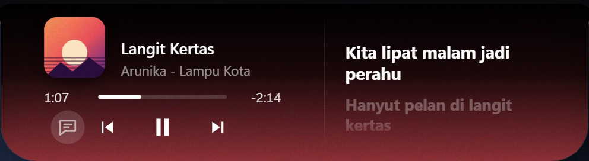
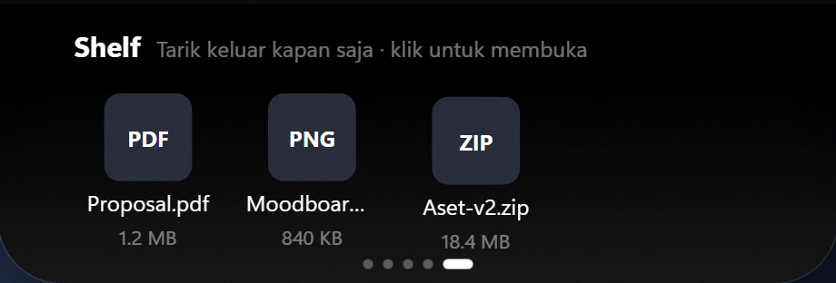
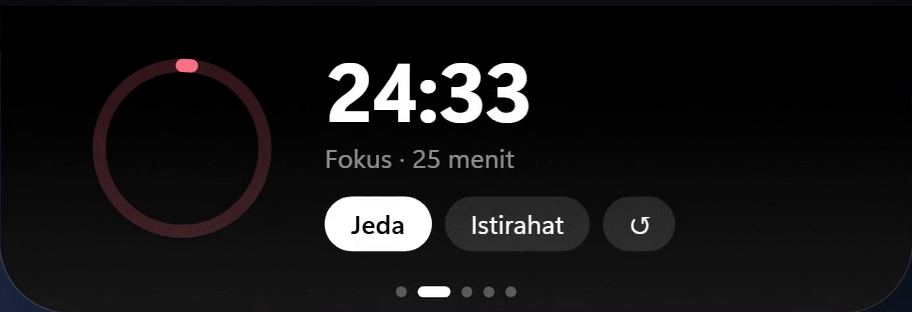
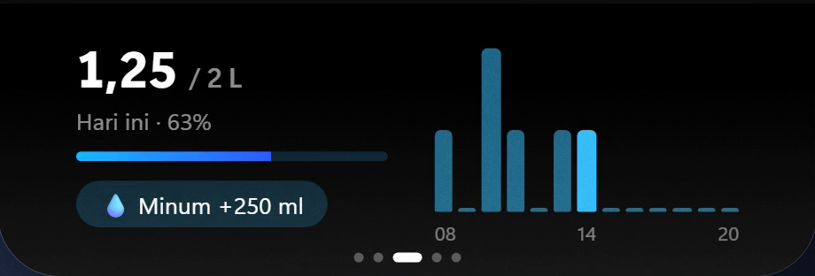
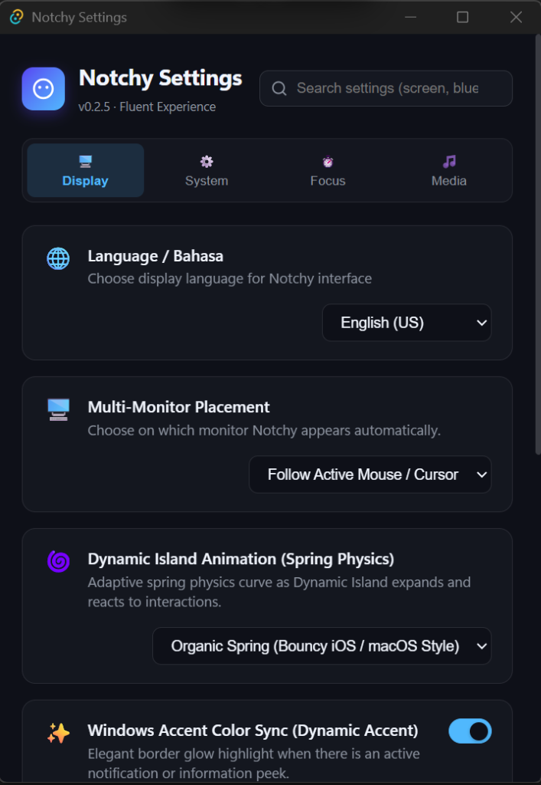

Pulau kecil pintar di atas layar yang menampilkan musik dengan lirik sinkron, pantauan kecepatan internet, intip notifikasi WhatsApp, dan maskot mata lucu yang menemani harimu. Ringan (~1% CPU) dan menyingkir saat menghalangi. A small black island at the top of your screen that shows what's happening—music, live synced lyrics, network speed, notifications—and tucks away when you need space. Built with Tauri 2, Rust, and Svelte 5.
Notchy mendeteksi tombol atau tab tepat di bawahnya, lalu otomatis menipis jadi garis 6px agar tidak pernah menghalangi klik. Notchy detects buttons or tabs directly underneath, instantly flattening to a 6px slim bar so clicks are never blocked.
Semua modul dan halaman bisa diatur atau dimatikan di menu Settings sesuai kebutuhanmu. Every page can be turned on or off in Settings to match your exact workflow.
Terhubung ke Media Transport Windows. Menampilkan cover album, animasi equalizer, dan lirik sinkron baris demi baris dari database komunitas LRCLIB. Hooks into Windows Media Transport. Displays album art, live equalizer, and line-by-line synchronized lyrics powered by LRCLIB.

Lihat kecepatan unduh dan unggah secara real-time. Otomatis berhenti saat idle untuk menghemat CPU. Real-time download and upload speeds. Automatically sleeps during idle periods to save battery.
Drop file ke notch untuk menyimpannya sejenak saat berpindah jendela aplikasi. Dilengkapi riwayat clipboard teks dan gambar. Drop files into the notch to temporarily hold them while switching apps. Includes rich clipboard history.

Pengingat ramah untuk minum air, istirahat mata setiap 20 menit, dan sesi Pomodoro tanpa perlu mengunduh aplikasi terpisah. Gentle reminders to hydrate, take 20-20-20 eye breaks, and run focus blocks without noisy separate apps.


Sesuaikan karakter Notchy dengan kepribadianmu: Classic Minimalist, Anime Sparkle ✨, Retro 8-Bit Pixel 👾, Cat Eyes 🐱, dan Cartoon Pupil 👀. Dilengkapi pupil yang melirik mandiri secara parallax, membesar saat kursor mendekat, mode mengecas simetris 3 kolom, head-bop mengikuti irama musik, serta gesture geli & kaget! Personalize Notchy to match your desktop aesthetic: Classic Minimalist, Anime Sparkle ✨, Retro 8-Bit Pixel 👾, Cat Eyes 🐱, and Cartoon Pupil 👀. Features dual-layer parallax gaze tracking, curiosity dilation, energized 3-column charging layout, music head-bop, and playful tickle/shocked reactions!
Notchy memiliki opsi untuk mengambil alih tombol volume keyboard dan menampilkan animasi mini peek yang rapi, menggantikan kotak overlay bawaan Windows yang besar. Notchy can intercept volume keys to display a sleek, compact peek—replacing Windows 11's oversized default volume overlay.

Bukan aplikasi Electron yang memakan memori ratusan MB. Notchy menggunakan Win32 hook asli dan Tauri 2. Not an Electron wrapper hogging your memory. Notchy is built on low-level Win32 event hooks and Tauri 2.
Event-driven tanpa polling loop terus-menerus. Laptop tetap dingin dan baterai awet. Event-driven without continuous polling loops. Keeps your laptop cool and quiet.
Area transparan tidak pernah menghalangi klik ke aplikasi lain berkat WS_EX_TRANSPARENT.
Transparent areas never obstruct clicks to apps underneath via WS_EX_TRANSPARENT.
Semua pengaturan dan to-do tersimpan lokal di laptop (%APPDATA%\Notchy). Tanpa telemetri.
Settings and data persist purely on your machine (%APPDATA%\Notchy). Zero analytics.
Tersedia file .zip tanpa install untuk PC kantor atau kampus yang membatasi hak admin. Portable .zip package available for locked enterprise laptops without admin privileges.
Pilih antara installer otomatis (auto-update) atau paket portable tanpa install. Choose between self-updating installer or zero-install portable zip.
Pemasangan otomatis per-user tanpa butuh admin. Notchy akan update sendiri ketika ada fitur baru. Standard per-user installer. Updates itself automatically when new versions are published.
Cukup ekstrak dan jalankan notchy.exe. Cocok untuk laptop kantor yang dibatasi IT.
Unzip and run directly. Ideal for restricted corporate environments without install rights.
Get-FileHash .\Notchy_0.2.7_x64-setup.exe -Algorithm SHA256
Pertanyaan yang sering ditanyakan seputar Notchy. Frequently asked questions about Notchy.